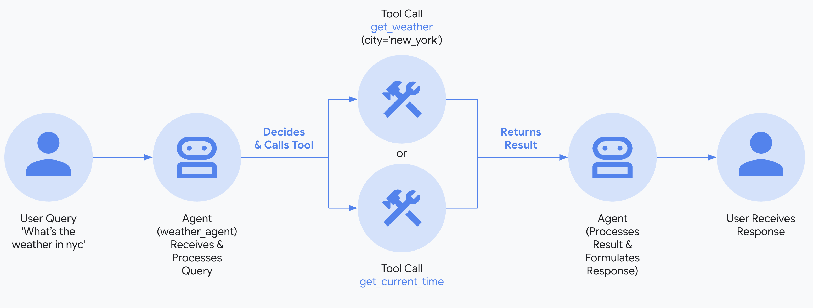
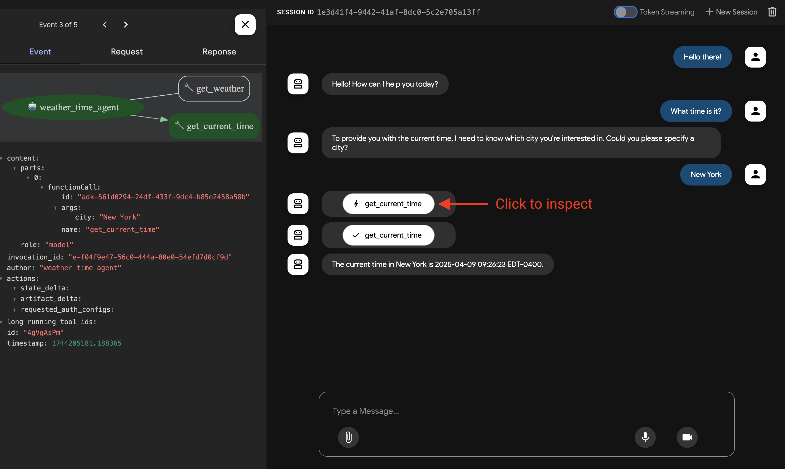
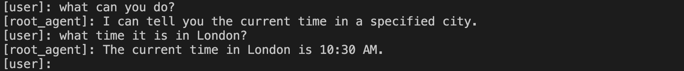
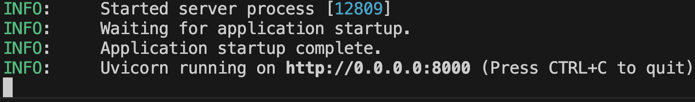

マルチツールエージェントを構築する¶
このクイックスタートでは、Agent Development Kit (ADK) をインストールし、複数のツールを備えた基本的なエージェントを設定し、ターミナルまたは対話型のブラウザベースの開発UIでローカルで実行する方法を説明します。
このクイックスタートは、Python 3.10+またはJava 17+がインストールされ、ターミナルアクセスが可能なローカルIDE (VS Code、PyCharm、IntelliJ IDEAなど) を想定しています。この方法は、アプリケーションをマシン上で完全に実行するため、内部開発に推奨されます。
1. 環境設定とADKのインストール¶
2. エージェントプロジェクトを作成する¶
プロジェクト構造¶
次のプロジェクト構造を作成する必要があります。
multi_tool_agentフォルダを作成します。
Windowsユーザーへの注意
次のいくつかのステップでWindowsでADKを使用する場合、次のコマンド (mkdir、echo) は通常、NULLバイトや誤ったエンコーディングでファイルを生成するため、ファイルエクスプローラまたはIDEを使用してPythonファイルを作成することをお勧めします。
__init__.py¶
次に、フォルダに__init__.pyファイルを作成します。
__init__.pyは次のようになります。
agent.py¶
同じフォルダにagent.pyファイルを作成します。
次のコードをagent.pyにコピーして貼り付けます。
# Copyright 2026 Google LLC
#
# Licensed under the Apache License, Version 2.0 (the "License");
# you may not use this file except in compliance with the License.
# You may obtain a copy of the License at
#
# http://www.apache.org/licenses/LICENSE-2.0
#
# Unless required by applicable law or agreed to in writing, software
# distributed under the License is distributed on an "AS IS" BASIS,
# WITHOUT WARRANTIES OR CONDITIONS OF ANY KIND, either express or implied.
# See the License for the specific language governing permissions and
# limitations under the License.
import datetime
from zoneinfo import ZoneInfo
from google.adk.agents import Agent
def get_weather(city: str) -> dict:
"""Retrieves the current weather report for a specified city.
Args:
city (str): The name of the city for which to retrieve the weather report.
Returns:
dict: status and result or error msg.
"""
if city.lower() == "new york":
return {
"status": "success",
"report": (
"The weather in New York is sunny with a temperature of 25 degrees"
" Celsius (77 degrees Fahrenheit)."
),
}
else:
return {
"status": "error",
"error_message": f"Weather information for '{city}' is not available.",
}
def get_current_time(city: str) -> dict:
"""Returns the current time in a specified city.
Args:
city (str): The name of the city for which to retrieve the current time.
Returns:
dict: status and result or error msg.
"""
if city.lower() == "new york":
tz_identifier = "America/New_York"
else:
return {
"status": "error",
"error_message": (
f"Sorry, I don't have timezone information for {city}."
),
}
tz = ZoneInfo(tz_identifier)
now = datetime.datetime.now(tz)
report = (
f'The current time in {city} is {now.strftime("%Y-%m-%d %H:%M:%S %Z%z")}'
)
return {"status": "success", "report": report}
root_agent = Agent(
name="weather_time_agent",
model="gemini-2.5-flash",
description=(
"Agent to answer questions about the time and weather in a city."
),
instruction=(
"You are a helpful agent who can answer user questions about the time and weather in a city."
),
tools=[get_weather, get_current_time],
)
.env¶
同じフォルダに.envファイルを作成します。
このファイルに関する詳細な指示は、モデルのセットアップに関する次のセクションで説明されています。
Javaプロジェクトは通常、次のプロジェクト構造を特徴とします。
project_folder/
├── pom.xml (または build.gradle)
├── src/
├── └── main/
│ └── java/
│ └── agents/
│ └── multitool/
└── test/
MultiToolAgent.javaを作成する¶
src/main/java/agents/multitool/ディレクトリのagents.multitoolパッケージにMultiToolAgent.javaソースファイルを作成します。
次のコードをMultiToolAgent.javaにコピーして貼り付けます。
package agents.multitool;
import com.google.adk.agents.BaseAgent;
import com.google.adk.agents.LlmAgent;
import com.google.adk.events.Event;
import com.google.adk.runner.InMemoryRunner;
import com.google.adk.sessions.Session;
import com.google.adk.tools.Annotations.Schema;
import com.google.adk.tools.FunctionTool;
import com.google.genai.types.Content;
import com.google.genai.types.Part;
import io.reactivex.rxjava3.core.Flowable;
import java.nio.charset.StandardCharsets;
import java.text.Normalizer;
import java.time.ZoneId;
import java.time.ZonedDateTime;
import java.time.format.DateTimeFormatter;
import java.util.Map;
import java.util.Scanner;
public class MultiToolAgent {
private static String USER_ID = "student";
private static String NAME = "multi_tool_agent";
// The run your agent with Dev UI, the ROOT_AGENT should be a global public static final variable.
public static final BaseAgent ROOT_AGENT = initAgent();
public static BaseAgent initAgent() {
return LlmAgent.builder()
.name(NAME)
.model("gemini-2.0-flash")
.description("Agent to answer questions about the time and weather in a city.")
.instruction(
"You are a helpful agent who can answer user questions about the time and weather"
+ " in a city.")
.tools(
FunctionTool.create(MultiToolAgent.class, "getCurrentTime"),
FunctionTool.create(MultiToolAgent.class, "getWeather"))
.build();
}
public static Map<String, String> getCurrentTime(
@Schema(name = "city",
description = "The name of the city for which to retrieve the current time")
String city) {
String normalizedCity =
Normalizer.normalize(city, Normalizer.Form.NFD)
.trim()
.toLowerCase()
.replaceAll("(\\p{IsM}+|\\p{IsP}+)", "")
.replaceAll("\\s+", "_");
return ZoneId.getAvailableZoneIds().stream()
.filter(zid -> zid.toLowerCase().endsWith("/" + normalizedCity))
.findFirst()
.map(
zid ->
Map.of(
"status",
"success",
"report",
"The current time in "
+ city
+ " is "
+ ZonedDateTime.now(ZoneId.of(zid))
.format(DateTimeFormatter.ofPattern("HH:mm"))
+ "."))
.orElse(
Map.of(
"status",
"error",
"report",
"Sorry, I don't have timezone information for " + city + "."));
}
public static Map<String, String> getWeather(
@Schema(name = "city",
description = "The name of the city for which to retrieve the weather report")
String city) {
if (city.toLowerCase().equals("new york")) {
return Map.of(
"status",
"success",
"report",
"The weather in New York is sunny with a temperature of 25 degrees Celsius (77 degrees"
+ " Fahrenheit).");
} else {
return Map.of(
"status", "error", "report", "Weather information for " + city + " is not available.");
}
}
public static void main(String[] args) throws Exception {
InMemoryRunner runner = new InMemoryRunner(ROOT_AGENT);
Session session =
runner
.sessionService()
.createSession(NAME, USER_ID)
.blockingGet();
try (Scanner scanner = new Scanner(System.in, StandardCharsets.UTF_8)) {
while (true) {
System.out.print("\nYou > ");
String userInput = scanner.nextLine();
if ("quit".equalsIgnoreCase(userInput)) {
break;
}
Content userMsg = Content.fromParts(Part.fromText(userInput));
Flowable<Event> events = runner.runAsync(USER_ID, session.id(), userMsg);
System.out.print("\nAgent > ");
events.blockingForEach(event -> System.out.println(event.stringifyContent()));
}
}
}
}
次のプロジェクト構造を作成する必要があります。
agent.go¶
プロジェクトフォルダにagent.goファイルを作成します。
次のコードをagent.goにコピーして貼り付けます。
package main
import (
"context"
"log"
"os"
"google.golang.org/genai"
"google.golang.org/adk/agent"
"google.golang.org/adk/agent/llmagent"
"google.golang.org/adk/cmd/launcher"
"google.golang.org/adk/cmd/launcher/full"
"google.golang.org/adk/model/gemini"
"google.golang.org/adk/tool"
"google.golang.org/adk/tool/geminitool"
)
func main() {
ctx := context.Background()
// 1. Setup the model.
// Note: Authentication is handled via GOOGLE_API_KEY environment variable.
model, err := gemini.NewModel(ctx, "gemini-2.5-flash", &genai.ClientConfig{
APIKey: os.Getenv("GOOGLE_API_KEY"),
})
if err != nil {
log.Fatalf("Failed to create model: %v", err)
}
// 2. Define the agent.
a, err := llmagent.New(llmagent.Config{
Name: "multi_tool_agent",
Model: model,
Description: "An agent that can answer questions using Google Search.",
Instruction: "You are a helpful assistant. Use the available tools to answer questions.",
Tools: []tool.Tool{
geminitool.GoogleSearch{},
},
})
if err != nil {
log.Fatalf("Failed to create agent: %v", err)
}
// 3. Configure the launcher and run.
config := &launcher.Config{
AgentLoader: agent.NewSingleLoader(a),
}
l := full.NewLauncher()
if err = l.Execute(ctx, config, os.Args[1:]); err != nil {
log.Fatalf("Run failed: %v\n\n%s", err, l.CommandLineSyntax())
}
}
.env¶
同じフォルダに.envファイルを作成します。

3. モデルをセットアップする¶
エージェントがユーザー要求を理解し、応答を生成する能力は、大規模言語モデル (LLM) によって強化されています。エージェントは、この外部LLMサービスに安全な呼び出しを行う必要があり、これには認証情報が必要です。有効な認証がないと、LLMサービスはエージェントの要求を拒否し、エージェントは機能できません。
モデル認証ガイド
さまざまなモデルの認証に関する詳細なガイドについては、認証ガイドを参照してください。 これは、エージェントがLLMサービスに呼び出しを行えるようにするための重要なステップです。
- Google AI StudioからAPIキーを取得します。
-
Pythonを使用している場合は、(
multi_tool_agent/) 内にある.envファイルを開き、次のコードをコピーして貼り付けます。Javaを使用している場合は、環境変数を定義します。
Goを使用している場合は、ターミナルで環境変数を定義するか、
.envファイルを使用します: -
PASTE_YOUR_ACTUAL_API_KEY_HEREを実際のAPI KEYに置き換えます。
- Google Cloudプロジェクトをセットアップし、Vertex AI APIを有効にします。
- gcloud CLIをセットアップします。
- ターミナルから
gcloud auth application-default loginを実行してGoogle Cloudに認証します。 -
Pythonを使用している場合は、(
multi_tool_agent/) 内にある.envファイルを開きます。次のコードをコピーして貼り付け、プロジェクトIDとロケーションを更新します。multi_tool_agent/.envGOOGLE_GENAI_USE_VERTEXAI=TRUE GOOGLE_CLOUD_PROJECT=YOUR_PROJECT_ID GOOGLE_CLOUD_LOCATION=LOCATIONJavaを使用している場合は、環境変数を定義します。
terminalexport GOOGLE_GENAI_USE_VERTEXAI=TRUE export GOOGLE_CLOUD_PROJECT=YOUR_PROJECT_ID export GOOGLE_CLOUD_LOCATION=LOCATIONGoを使用している場合は、ターミナルで環境変数を定義するか、
.envファイルを使用します:
- 無料のGoogle Cloudプロジェクトにサインアップし、対象となるアカウントでGeminiを無料で利用できます！
- Vertex AI ExpressモードのGoogle Cloudプロジェクトをセットアップします。
- ExpressモードプロジェクトからAPIキーを取得します。このキーはADKでGeminiモデルを無料で利用したり、Agent Engineサービスにアクセスしたりするために使用できます。
-
Pythonを使用している場合は、(
multi_tool_agent/) 内にある.envファイルを開きます。次のコードをコピーして貼り付け、プロジェクトIDとロケーションを更新します。multi_tool_agent/.envGOOGLE_GENAI_USE_VERTEXAI=TRUE GOOGLE_API_KEY=PASTE_YOUR_ACTUAL_EXPRESS_MODE_API_KEY_HEREJavaを使用している場合は、環境変数を定義します。
terminalexport GOOGLE_GENAI_USE_VERTEXAI=TRUE export GOOGLE_API_KEY=PASTE_YOUR_ACTUAL_EXPRESS_MODE_API_KEY_HEREGoを使用している場合は、ターミナルで環境変数を定義するか、
.envファイルを使用します:
4. エージェントを実行する¶
ターミナルを使用して、エージェントプロジェクトの親ディレクトリに移動します (例: cd ..を使用)。
エージェントと対話する方法は複数あります。
Vertex AIユーザーの認証設定
前の手順で「Gemini - Google Cloud Vertex AI」を選択した場合、開発UIを起動する前にGoogle Cloudで認証する必要があります。
このコマンドを実行し、プロンプトに従ってください。
注: 「Gemini - Google AI Studio」を使用している場合は、この手順をスキップしてください。
次のコマンドを実行して開発UIを起動します。
Windowsユーザーへの注意
_make_subprocess_transport NotImplementedErrorが発生した場合は、代わりにadk web --no-reloadを使用することを検討してください。
ステップ1: 提供されたURL (通常はhttp://localhost:8000またはhttp://127.0.0.1:8000) をブラウザで直接開きます。
ステップ2. UIの左上隅にあるドロップダウンでエージェントを選択できます。「multi_tool_agent」を選択します。
トラブルシューティング
ドロップダウンメニューに「multi_tool_agent」が表示されない場合は、エージェントフォルダの親フォルダ (つまり、multi_tool_agentの親フォルダ) でadk webを実行していることを確認してください。
ステップ3. 次に、テキストボックスを使用してエージェントとチャットできます。

ステップ4. 左側のイベントタブを使用して、アクションをクリックすることで個々の関数呼び出し、応答、モデル応答を検査できます。

イベントタブでは、トレースボタンをクリックして、各関数呼び出しの遅延時間を示す各イベントのトレースログを表示することもできます。

ステップ5. マイクを有効にしてエージェントと話すこともできます。
音声/ビデオストリーミングのモデルサポート
ADKで音声/ビデオストリーミングを使用するには、Live APIをサポートするGeminiモデルを使用する必要があります。Gemini Live APIをサポートするモデルIDは、次のドキュメントに記載されています。
その後、以前に作成したagent.pyファイルのroot_agentでmodel文字列を置き換えることができます (セクションにジャンプ)。コードは次のようになります。

Tip
adk runを使用する場合、次のようにコマンドにテキストをパイプすることで、プロンプトをエージェントに注入して開始できます。
次のコマンドを実行して、Weatherエージェントとチャットします。

終了するには、Cmd/Ctrl+Cを使用します。
adk api_serverを使用すると、単一のコマンドでローカルFastAPIサーバーを作成できるため、エージェントをデプロイする前にローカルのcURLリクエストをテストできます。

テストのためにadk api_serverを使用する方法については、APIサーバーの使用に関するドキュメントを参照してください。
ターミナルを使って、エージェントプロジェクトのディレクトリに移動します:
エージェントと対話する方法は複数あります。
次のコマンドを実行して開発UIを起動します。アクティブにするサブランチャーを指定する必要があります（例: webui、api）。
ステップ1: 提供されたURL (通常はhttp://localhost:8080) をブラウザで直接開きます。
ステップ2. UIの左上隅にあるドロップダウンでエージェントを選択できます。「weather_time_agent」を選択します。
ステップ3. 次に、テキストボックスを使用してエージェントとチャットできます。
ターミナルを使用して、エージェントプロジェクトの親ディレクトリに移動します (例: cd ..を使用)。
project_folder/ <-- このディレクトリに移動
├── pom.xml (または build.gradle)
├── src/
├── └── main/
│ └── java/
│ └── agents/
│ └── multitool/
│ └── MultiToolAgent.java
└── test/
ターミナルから次のコマンドを実行して開発UIを起動します。
開発UIサーバーのメインクラス名は変更しないでください。
mvn exec:java \
-Dexec.mainClass="com.google.adk.web.AdkWebServer" \
-Dexec.args="--adk.agents.source-dir=src/main/java" \
-Dexec.classpathScope="compile"
ステップ1: 提供されたURL (通常はhttp://localhost:8080またはhttp://127.0.0.1:8080) をブラウザで直接開きます。
ステップ2. UIの左上隅にあるドロップダウンでエージェントを選択できます。「multi_tool_agent」を選択します。
トラブルシューティング
ドロップダウンメニューに「multi_tool_agent」が表示されない場合は、Javaソースコードがある場所 (通常はsrc/main/java) でmvnコマンドを実行していることを確認してください。
ステップ3. 次に、テキストボックスを使用してエージェントとチャットできます。
ステップ4. 個々の関数呼び出し、応答、モデル応答をアクションをクリックして検査することもできます。
Mavenを使用する場合、次のコマンドでJavaクラスのmain()メソッドを実行します。
📝 試してみるプロンプトの例¶
- ニューヨークの天気はどうですか？
- ニューヨークの時間は何時ですか？
- パリの天気はどうですか？
- パリの時間は何時ですか？
🎉 おめでとうございます！¶
ADKを使用して最初のエージェントの作成と対話に成功しました！